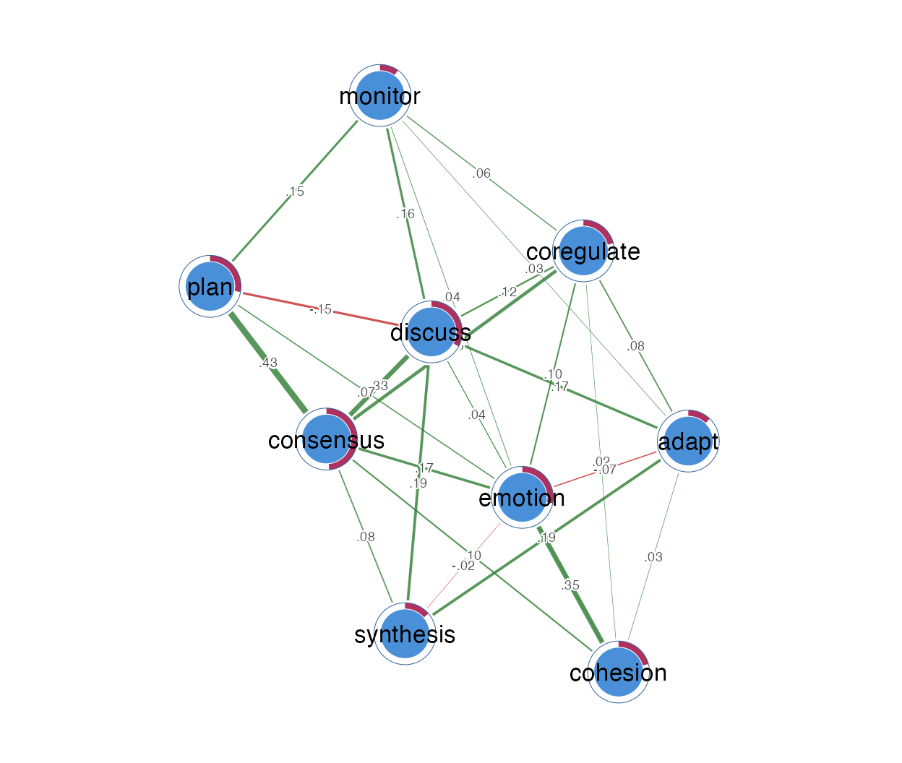
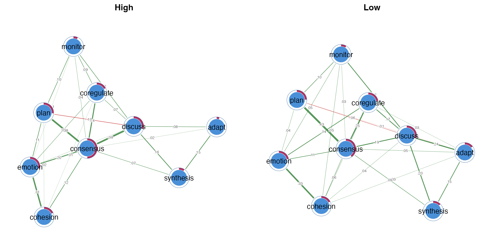
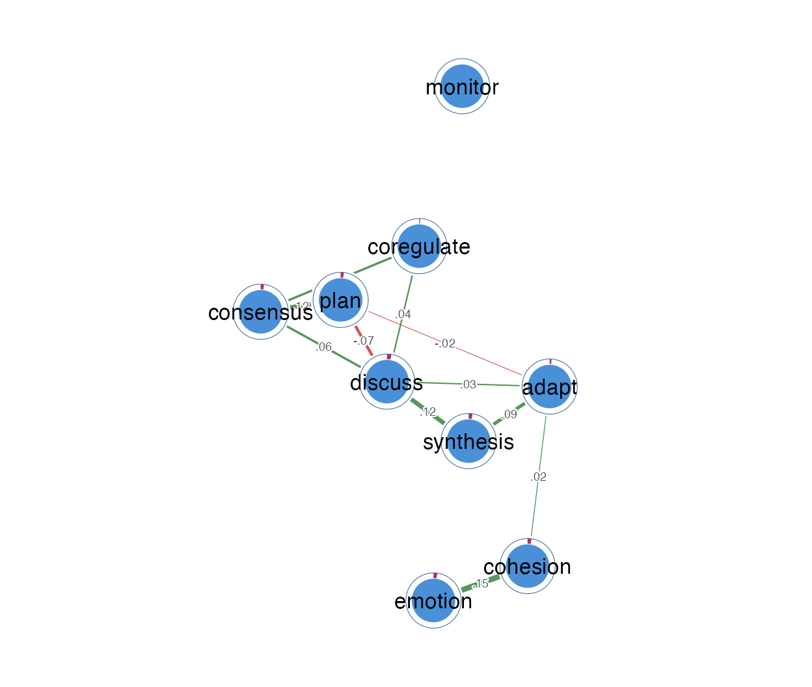
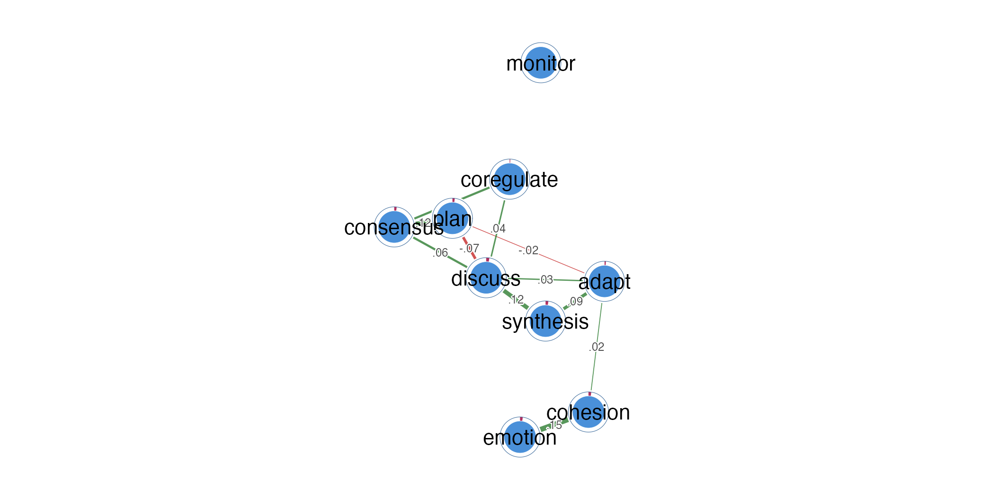
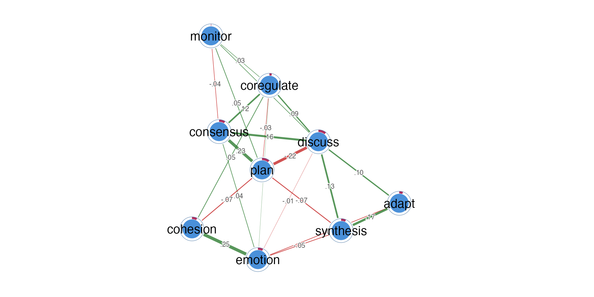

vignettes/group-networks-from-event-data.Rmd
group-networks-from-event-data.Rmdpsychnets is the psychometric-network engine of
Dynalytics, a family of tools for analysing the
process and event data that learning environments and
log files produce. It builds a psychometric network directly
from an event log — you do not have to reshape the log into a
wide person-by-item table first. It handles two things for you:
psychnets keeps the two kinds of variation
apart — how states move together within a person versus how
people differ on average — instead of mixing them into one
misleading number.Actor).This vignette uses the group_regulation_long event log
from the tna package.
Each row is a single action by a
student (Actor), at a
time (Time), in a collaboration
group (Group), with the student’s
achievement level (Achiever). This is the raw shape a
learning platform records.
head(gr)
#> Actor Achiever Group Course Time Action
#> 1 1 High 1 A 2025-01-01 10:27:07 cohesion
#> 2 1 High 1 A 2025-01-01 10:35:20 consensus
#> 3 1 High 1 A 2025-01-01 10:42:18 discuss
#> 4 1 High 1 A 2025-01-01 10:50:00 synthesis
#> 5 1 High 1 A 2025-01-01 10:52:25 adapt
#> 6 1 High 1 A 2025-01-01 10:57:31 consensusGive psychnet() the actor column and it does the rest:
it counts each student’s nine regulation actions into
one profile, then estimates the network of how those states co-occur
across students. The result carries its own correctness certificate —
the tiny KKT residual — so you can trust it is the optimal network for
this data.
net <- psychnet(gr, actor = "Actor")
net
#> <psychnet> glasso network
#> nodes: 9 edges: 28 (undirected)
#> lambda: 0.008001 gamma: 0.5
#> optimality (KKT residual): 3.19e-11
cograph::splot(net, psych_styling = TRUE)
In plain terms: every student is summarised by how often they did each of the nine actions, and the network shows which actions tend to rise and fall together across students.
Add group = "Achiever" and psychnet()
estimates a separate network for each level — here,
high- versus low-achieving students — and returns them as one object
that plots as a grid and is understood by every analysis verb.
byach <- psychnet(gr, actor = "Actor", group = "Achiever")
byach
#> <psychnet_group> 2 networks by Achiever (method: glasso)
#> group nodes edges n
#> High 9 25 1000
#> Low 9 27 1000
cograph::splot(byach, psych_styling = TRUE)
The framework verbs notice the group object and return one result per group — you never loop over the groups yourself.
net_centralities(byach)
#> <psychnet_centrality_group> 2 groups: High, Low
#>
#> --- High ---
#> node strength expected_influence
#> 1 adapt 0.2557087 0.2557087
#> 2 cohesion 0.4572828 0.4572828
#> 3 consensus 1.4481964 1.4481964
#> 4 coregulate 0.4826224 0.4826224
#> 5 discuss 0.9148080 0.7172144
#> 6 emotion 0.7213529 0.7213529
#> 7 monitor 0.3386263 0.3386263
#> 8 plan 0.7092177 0.5116240
#> 9 synthesis 0.3777409 0.3777409
#>
#> --- Low ---
#> node strength expected_influence
#> 1 adapt 0.5044549 0.4798929
#> 2 cohesion 0.5561617 0.5561617
#> 3 consensus 1.2000886 1.2000886
#> 4 coregulate 0.6383543 0.6383543
#> 5 discuss 1.0808622 0.9531748
#> 6 emotion 0.6868285 0.6868285
#> 7 monitor 0.4027815 0.4027815
#> 8 plan 0.6447291 0.4924798
#> 9 synthesis 0.4415186 0.4415186So far each student gave one occasion. But a
student’s log is really several short working sessions.
If we treat a pause longer than five minutes as the start of a new
session (time_threshold = 300 seconds), each student now
contributes several occasions — and those occasions are
nested inside the student. (With this data the sessions
only appear at a short gap like this: each student’s raw log is one
continuous episode, so the default 15-minute gap never splits it.)
Why does that matter? Because two different questions get tangled together:
If you ignore the nesting, these mix and the network can be
misleading. psychnets separates them.
By default (standardize = TRUE) psychnet()
removes the between-student differences — it centres
each student’s sessions on that student’s own average — and returns the
single within-student network: how regulation states move
together inside a person’s work, with overall student differences taken
out.
net_within <- psychnet(gr, actor = "Actor", time = "Time", time_threshold = 300)
net_within
#> <psychnet> glasso network
#> nodes: 9 edges: 14 (undirected)
#> lambda: 0.0288 gamma: 0.5
#> optimality (KKT residual): 1.30e-12
cograph::splot(net_within, psych_styling = TRUE)
Set standardize = FALSE to keep both
networks: the within-student network (co-movement
across a person’s sessions) and the between-student
network (how students’ average profiles differ).
wb <- psychnet(gr, actor = "Actor", time = "Time", time_threshold = 300,
standardize = FALSE)
wb
#> <psychnet_multilevel> glasso networks (within + between)
#> actors: 2000 occasions: 12305
#> within : 9 nodes, 14 edges
#> between: 9 nodes, 24 edges
cograph::splot(wb$within, psych_styling = TRUE)
cograph::splot(wb$between, psych_styling = TRUE)
Their centralities, each a single tidy call:
net_centralities(wb$within)
#> node strength expected_influence
#> 1 adapt 0.159298408 0.127502765
#> 2 cohesion 0.178267388 0.167592113
#> 3 consensus 0.232447906 0.232447906
#> 4 coregulate 0.105893985 0.105893985
#> 5 discuss 0.321389211 0.173684238
#> 6 emotion 0.147896226 0.147896226
#> 7 monitor 0.004845725 0.004845725
#> 8 plan 0.211189059 0.021013169
#> 9 synthesis 0.205977161 0.205977161
net_centralities(wb$between)
#> node strength expected_influence
#> 1 adapt 0.3244106 0.21670670
#> 2 cohesion 0.3675797 0.23521388
#> 3 consensus 0.5958375 0.52307346
#> 4 coregulate 0.3367773 0.27597122
#> 5 discuss 0.7401066 0.28409926
#> 6 emotion 0.4104631 0.19656735
#> 7 monitor 0.1555971 0.08283304
#> 8 plan 0.6709055 -0.10758555
#> 9 synthesis 0.4251871 0.18968345In plain terms: the within network answers “when this student is working, which regulation states go hand in hand?”; the between network answers “how do students differ from one another overall?”. De-clustering is simply not letting those two answers contaminate each other.
group = "Achiever" splits it
into one network per group → Part 2.standardize = TRUE
keeps only within; FALSE keeps both).